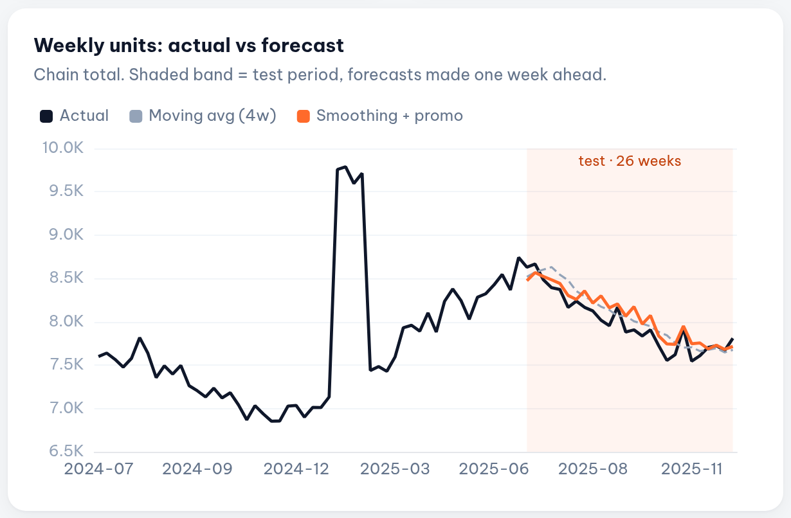
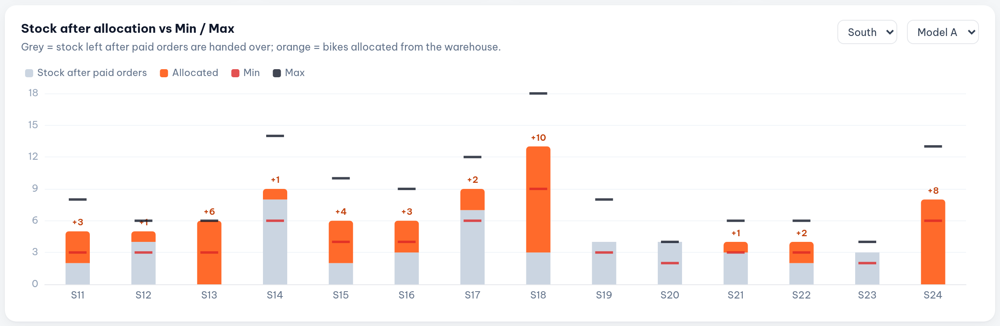
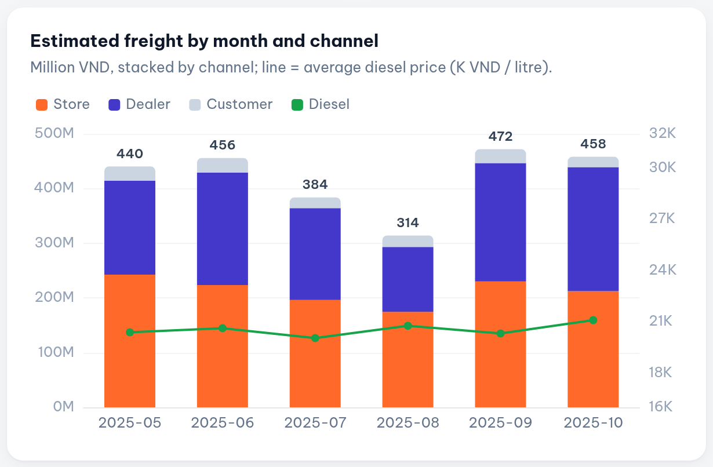
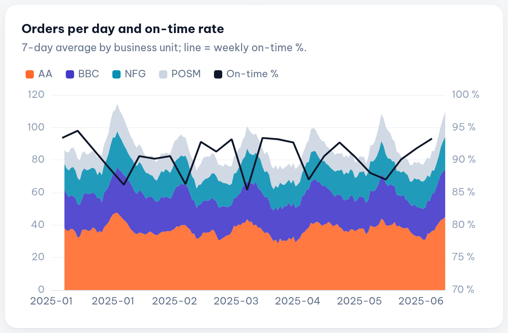

Huynh Khang Vinh
Summary
Operations analyst with 4 years across supply chain, warehousing and logistics (FMCG, electronics, retail, electric vehicles). I build the data tools that connect departments: SQL pipelines, live dashboards and internal web apps that let Sales, Logistics, Purchasing and Warehouse work from the same numbers. Strongest at turning manual, spreadsheet-heavy workflows into automated, reliable processes.
Skills
Experience
- Built and run the internal operations web platform that links Sales, Logistics, Purchasing and Warehouse on one live data source (Python, SQL, Streamlit, Google Sheets sync).
- Raised dispatch capacity from 100–200 to 300–500 bikes per day by automating stock allocation, transfer and shipping follow-up.
- Gave Sales timely visibility of every sale and order, supporting growth from 5K to 8K unit / period.
- Automated daily bike allocation to stores and dealers using Min/Max rules, paid orders and open transfers; results published straight to planners' sheets.
- Built a monthly transport report that estimates carrier freight by route, trip size and diesel price, mapping addresses across the 2025 administrative-unit merger.
- Leading the migration of the reporting SQL layer from MySQL to BigQuery (89 queries) with automated conversion and a tracking checklist.
- Built and tuned weekly demand forecasts for 7-Eleven stores to keep stock levels right and cut out-of-stocks.
- Planned purchasing cycles from the forecasts to speed up inventory turnover.
- Developed procurement tools and dashboards in Google Apps Script that replaced manual data entry for the Purchasing team.
- Fixed warehouse bottlenecks and automated coordination with 3PL partners, shortening lead time to stores.
- Support Excel, data analysis and Power BI classes: hands-on guidance, troubleshooting and assignment reviews.
- Build training material (datasets, business cases, slides) and research new features for upcoming courses.
- Co-managed warehouse operations with the supervisor: stock records, storage planning and workflow improvements.
- Ran order processing and POSM inventory in SAP Business One; planned demand to keep stock available.
- Built an internal inventory app with AppSheet + Google Sheets that streamlined stock tracking and order processing.
- Created Power BI warehouse performance dashboards and supported users on the WMS; coordinated warehouse interns.
- Received orders from Panasonic (electronics) and Central Retail Vietnam (FMCG) and planned on-time deliveries in Smartlog.
- Issued delivery notes in SAP and exported invoices to the Panasonic system; reconciled daily inventory transactions.
Portfolio projects · synthetic data

Demand forecasting & replenishment
180 store × SKU series; exponential smoothing with a learned promo uplift cut WAPE from 20.3 % (naive) to 12.6 % and stock-out weeks from 25.3 % to 13.6 %.

Min/Max bike allocation
Rule engine that serves paid orders first, then fills Min and Max by lowest coverage; 49 → 0 store-models below Min, with a built-in self-check.

Freight cost estimator
Prices 1,800 trips from a destination × trip-size tariff with a diesel surcharge at pick-up date; monthly roll-up written in SQL.

Warehouse & delivery KPIs
On-time rate by business unit, picker ranking and issue Pareto with CTEs and window functions; shows the month-end peak dragging on-time from 92 % to 84 %.
Interactive dashboard, code and data: github.com/dinndinn1204/Khang-Vinh_Portfolio · Earlier Power BI work: Delivery Report (shipments, CS and picker performance), Sales Performance and E-commerce Sales & Operations dashboards.
Education
Hoa Sen University · 2023 · GPA 3.32 / 4.0